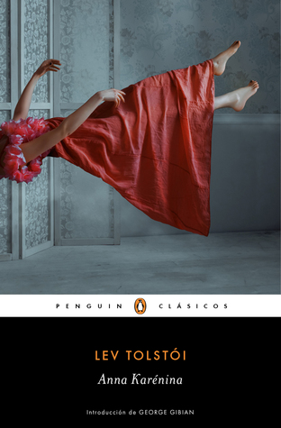

Anna Karénina
Reseña por Jorge I. Zuluaga

Ver reseña en GoodReads (necesita cuenta)
Es difícil escribir una reseña sobre una obra ampliamente conocida, muy leída y admirada por todos. Más difícil todavía es decir algo inteligente o relevante en medio de las cientos o miles de reseñas que han escrito personas aficionadas y expertas a lo largo de los más de 150 años que pesan sobre ella.
Aún así, necesito desahogarme. Decir lo que pienso después de pasar más de un mes sumergido entre las páginas de "Anna Karénina", nadando desesperadamente de una isla de relevancia a la siguiente.
Para cuidar las formas, comencemos por lo bueno .
Es mi primera aproximación a la obra de Lev Tolstói y ahora entiendo la admiración que ha despertado siempre. Hasta ahora no había leído un autor o una autora con la capacidad de Tolstói de meterse en la cabeza de una diversidad tan amplia de personas: mujeres, hombres, ancianos, niños, ricos, pobres, campesinos, nobles; incluso la capacidad de imaginar y poner por escrito lo que piensan o sienten animales distintos, perros, pájaros, caballos. Tolstói es ciertamente un maestro de la psicología.
Puede que las complejidades psicológicas de los personajes de Tolstói no sean comparables a las de los personajes de la obra de Dostoyevski, pero la increíble diversidad de personajes de "Anna Karénina", todos con una vida propia y que se desarrollan delante de nuestros ojos hasta hacernos creer que los conocemos bastante, impresionan.
En muchos sentidos "Anna Karénina" me pareció un largo reportaje sobre la Rusia de su tiempo (1878). Debo confesar que esto es lo que me atrae de leer la obra de autores y las autoras del siglo xix. Si bien sus novelas –con excepciones naturalmente– no fueron escritas como novela histórica, desde la distancia de más de un siglo que nos separa de ellas, se pueden leer así. Desfilan por las páginas de "Anna Karenina" descripciones pormenorizadas de los medios de transporte, las relaciones entre las distintas clases sociales, la monarquía Rusa, la nobleza, las normas morales, las leyes, la familia, el juego, la tierra, la guerra y muchas otras cosas. Con su increíble capacidad descriptiva, otra cosa que me impresiono de su obra, Tolstói convierte el extenso conjunto de relatos de los que trata está novela en un verdadero viaje en el tiempo. ¡Gracias don Lev!
Ahora bien ¿de qué trata exactamente Anna Karénina? Todos deben saberlo ¿o no?
Si me pidieran resumir en pocas palabras el contenido de esta historia, lo primero que diría es que "Anna Karénina" no es una novela sobre Anna Karénina.
Primera decepción, al menos para mí.
Aunque este libro ha sido llevada al cine y la televisión en incontables ocasiones, la verdad es que en esas representaciones se ha escogido solo una de los historias que se entretejen allí. Anna Karénina es solo uno de los personajes, tal vez el más interesante para todos o al menos el que se presta más para una representación cinematográfica. Pero ciertamente no es la única protagonista.
Anna Karénina es una novela que narra parte de la vida de 3 personajes principales: Konstantín Levin, Stepán Oblonsky y por supuesto, Anna Karénina. Un neurótico, un dandi infiel y una mujer compleja.
Es obvio que la historia no se reduce a esos tres personajes, pero mi impresión –y espero que la de muchas otras personas que hayan leído la novela– es que todos los hilos argumentales giraban alrededor de esas tres personas.
Pasemos a lo negativo.
La extensión: mil páginas en la edición que leí (Penguin clásicos, libro de "bolsillo").
No es que eso este mal. Muchas otros clásicos tienen extensiones similares o mayores ("Los miserables", "Los hermanos Karamazov", "En busca del tiempo perdido", etc.). Pero es que la mayor parte de las mil páginas de "Anna Karénina" están llenas de detalles sencillamente irrelevantes.
Los más puristas o los profesionales de la literatura, me dirán que ninguna obra literaria tiene una sola página irrelevante. Que esa es solo una impresión mía como aficionado, incluso como científico que soy. Pero por mucho que me expliquen de qué manera describir con lujo de detalles una cacería de pájaros en un pantano (30 páginas) o la ciega del heno de los campesinos rusos (25 páginas), es fundamental para la novela veo muy difícil que me convenzan.
En muchos apartes me sentí como un náufrago, nadando por extensiones estériles de literatura naturalista –el género en el que debería clasificarse la novela– para arribar de vez en cuando a algunas islas de sentido. Quizás era el estilo de la época, un tiempo en el que no había cine o televisión y la gente necesitaba libros de miles de páginas, con los detalles que no se podrían encontrar en los periódicos o en las cartas.
Para los tiempos que corren es un estilo agotador. Excesivo.
El segundo elemento negativo de la novela, y tal vez el más delicado, es el tratamiento diferenciado que hace Tolstói de la psicología y las situaciones que viven los hombres y las mujeres de este tejido de historia.
Es cierto que estamos hablando de una obra escrita en el siglo xix, un siglo en el que estaban enquistadas las más abyectas prácticas de dependencia y sumisión femenina, pero también un siglo en el que se habían alcanzado algunos reivindicaciones de derechos de las mujeres, algunas de las cuáles se ven reflejadas en la novela. Pero esperaría uno más en el tratamiento de las diferencias de hombres y mujeres, en especial en la profundidad de las reflexiones de los personajes femeninos, de un autor con las dotes psicológicas de Tolstói.
Pero no: las mujeres de está novela son solo un puñado de emociones. Solo viven para preocuparse por los hombres en su vida. Escasamente algunas logran hacer reflexiones profundas sobre su condición de madres o de hijas, reflexiones que siempre se dan en relación con otros. Al contrario los hombres, en especial, el protagonista –no podríamos llamarlo de otra manera– el neurótico Levin, hace profundas reflexiones filosóficas.
Un solo y muy revelador ejemplo de lo que trato de decir.
La novela se llama "Anna Karénina". Sin embargo el final de la historia de este personaje –que no revelaré para no arruinarla– no es el final de la novela. ¡Hágame el favor!. El capítulo en el que ocurre el evento decisivo en la vida de Anna, es seguido por una serie de irrelevantes historias sobre otros personajes, en especial, sobre personajes masculinos. Aún peor, una novela que se llama Anna Karénina, y que en efecto logra conmovernos con la historia de una mujer víctima de las reglas morales y sociales de su época, finaliza con una reflexión moral y religiosa de uno de los personajes masculinos. ¡¿Qué?!
En fin. Por su extensión. Por las páginas que sobran. Por la superficialidad estereotipada de las mujeres de Tolstói. Por la excesiva relevancia que da a los personajes masculinos. Por todo eso solo le doy dos estrellas a Anna Karenina.
¿Quiere decir esto que no deberían leer la novela?. No. Es un clásico de la literatura que debería leerse –o intentar leer– alguna vez en la vida.
No les quito más tiempo. Me voy a ver la película.